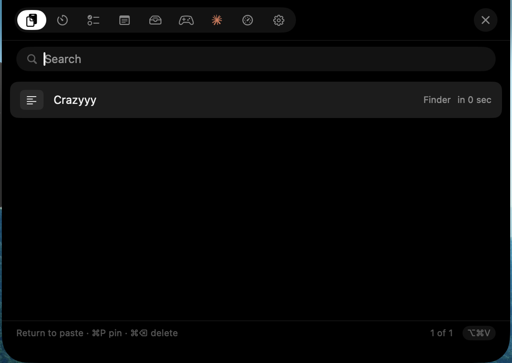

Stash lives in your menu bar and drops down from the top of the screen. Clipboard history, a focus timer, tasks, notes, a file shelf, system vitals, Claude, and a few games — without a single window in your way.

Every tool sits behind the same shortcut and the same dark panel. Switch tabs, never windows.
Everything you copy — text, links, images, files — kept and searchable. Pick one and it pastes straight into whatever you were doing.
A pomodoro with a rocket orbiting Earth — the orbit is the progress bar. Set any length, pick the chime, and keep a small countdown under the notch while you work.
Type, hit Return, done. Finished tasks strike through and drop to the bottom; open ones stay on top.
A scratchpad that never asks you to name anything. The first line becomes the title, and every keystroke saves itself.
Park files you are moving between apps. Add them with the picker, drag them straight back out into Finder, Mail or anywhere else.
Bring your own Anthropic API key and chat without leaving the panel. Right-click any clip to send it straight into the conversation.
CPU, memory, battery and every mounted disk, read straight from the kernel. Sampling only runs while you are looking at it.
A few games for the ninety seconds while a build runs, or whenever you need to look away from work. Best scores are remembered.
Rebind the shortcut to any combination, switch between light, dark and system, cap the history, and decide whether Stash pastes for you or just copies.
The panel opens focused on the search field, so you can start typing immediately.
| Key | Does |
|---|---|
| ⌘⌥V | Open or close Stash from anywhere — rebindable to any combination |
| ↑ ↓ | Move through clips. Hovering never scrolls the list out from under your cursor |
| Return | Paste the selected clip into the app you were just in |
| ⌘P | Pin a clip so it survives the history limit |
| ⌘⌫ | Delete the selected clip |
| ⌘A ⌘C ⌘V | Full editing inside the search field |
| Esc | Back to the clip list, or close the panel |